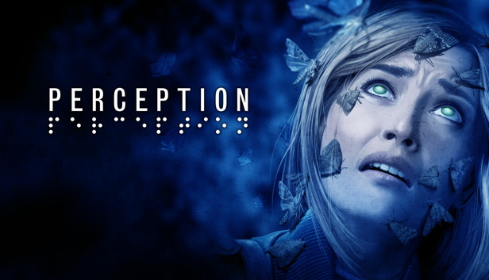
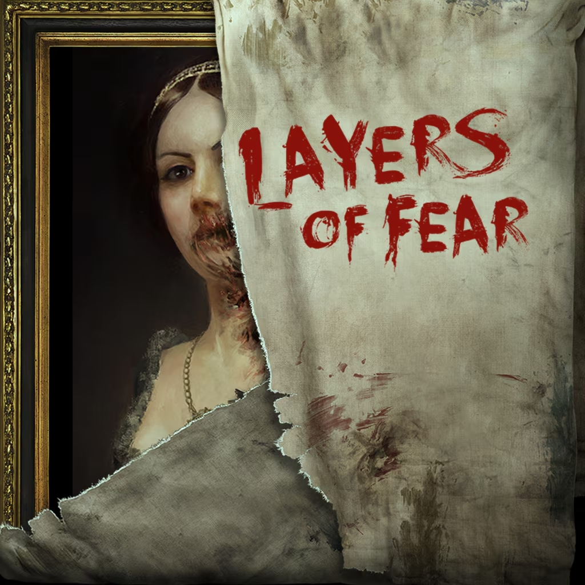

Project Benchmarks

Perception
Reference per la navigazione basata su ecolocalizzazione.

Layers of Fear
Ispirazione per l'orrore psicologico e i loop ambientali.

SOMA
Riferimento per il peso narrativo e l'isolamento profondo.